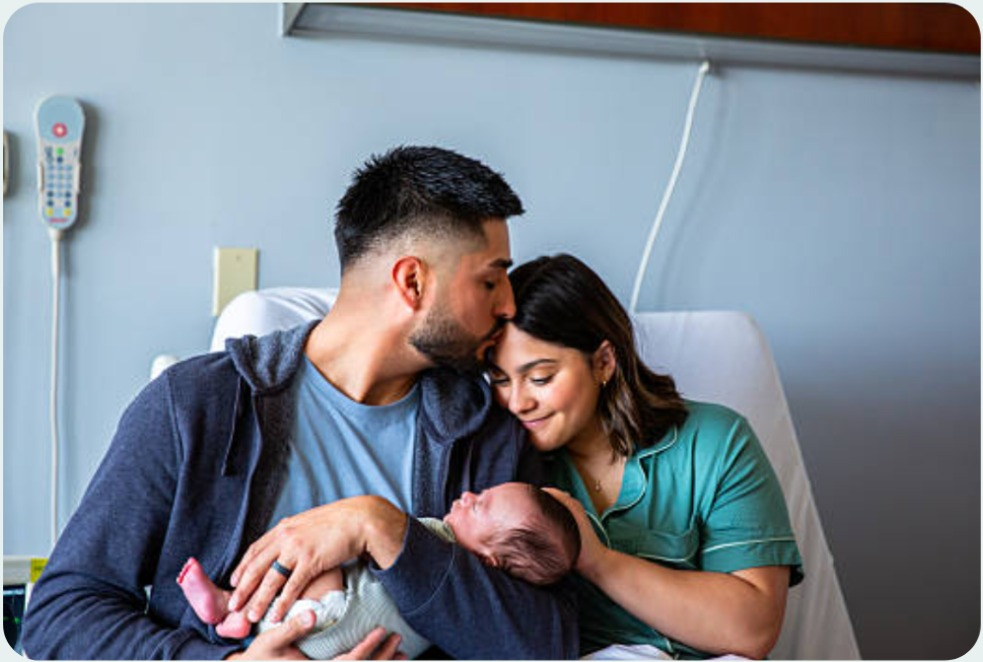

NICU Family Navigation
From NICU to home, we’re here with you
Personalized guidance, practical education, and continued support through your baby’s transition to home.

Mission statement
To bridge the gap between hospital-based neonatal care and life at home by providing families with personalized education, practical caregiving support and continued access to healthcare and community resources
NEST is a proposed hospital-affiliated family support program, offered at no cost to eligible NICU families. Our goal is to ensure every family has access to the guidance, education and resources they need to feel confident bringing their baby home.
Support that continues at home
From the first days after discharge through the following weeks, NEST helps families build confidence, ask questions and find the right supports for their changing needs.